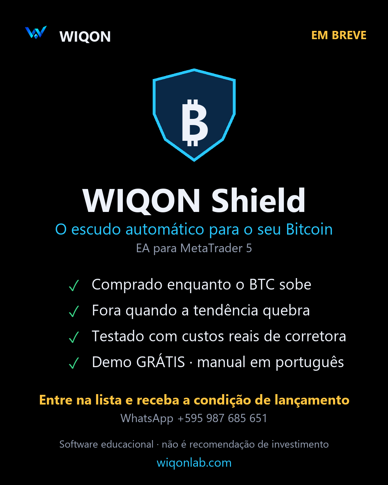

A maioria das estratégias que “funcionam” na internet não sobrevive a um teste honesto. A gente mede com anos de dados, custos reais e código aberto: o que funciona e o que não funciona.
Recalculada todos os dias com dados públicos da Binance. Se o sinal mudar, você vê aqui na mesma noite.
Decide uma vez por dia, com o candle fechado (21h de Brasília). O candle de hoje continua aberto e o preço muda a cada minuto: decidir com ele seria usar um dado incompleto.
Em 8 anos de dados (2018-2026), com taxas: 56,6% ao ano e queda máxima de 34,7%, contra 37,3% e 76,6% de comprar e segurar. Em mercados que só sobem, rende menos.
Operamos com capital real desde setembro de 2026. Não é recomendação de investimento. Ver o código que calcula o sinal.
O mesmo processo para cada ideia, nossa ou da comunidade. A maioria não passa do passo 3.
Pegamos uma ideia popular: um indicador, um robô, um “método” que circula nas redes.
Transformamos em regras exatas e medimos com anos de dados, taxas e slippage.
Janelas fora da amostra, intervalos de confiança e controle do viés de sobrevivência.
Só o que sobrevive é automatizado e operado com capital real. E publicamos.
Cada número tem código e dados no GitHub. Você pode reproduzir.
Filtro de tendência no BTC: 56,6% ao ano contra 37,3% de segurar, com metade da queda.
Ver o experimento →O EA com os custos de uma corretora real (2022-2026): x2,02 contra x1,96; queda 39% contra 67%. Os swaps levam um terço.
Ver o experimento →EMA21 Bounce: em 3 anos e 178 operações deu +0,71%, contra +9,3% de deixar USDT rendendo.
Ver o experimento →A mesma estratégia com as moedas de hoje e com as que existiam em 2021 (LUNA e FTT incluídas).
Ver o experimento →Moedas diferentes com o mesmo nome, saques bloqueados e diferenças que duravam segundos.
Ver o experimento →Spot comprado + perpétuo vendido. Em 2025-26 rende 2-3% ao ano: igual ou menos que o Earn.
Ver o experimento →
Fica comprado enquanto o BTC sobe e sai quando a tendência quebra. Testado com os spreads e swaps reais de uma corretora: ganhou o mesmo que segurar, com quase metade da queda (39% contra 67%, 2022-2026).
A versão para o Brasil está chegando. Entre na lista e receba primeiro a condição de lançamento.
Software educacional. Não é recomendação de investimento nem garante resultados.
Serviços técnicos de software e dados, com a mesma metodologia do laboratório.
Backtest de portfólio com custos reais, validação fora da amostra e intervalos de confiança. Dizemos se tem vantagem… ou não.
Ordens protegidas, Earn automático, alertas no Telegram e operação 24/7 no seu Raspberry Pi ou VPS.
Painéis com os seus dados e aulas de Python aplicado a mercados, individuais ou em grupo.
Não oferecemos consultoria de investimentos, recomendação personalizada nem gestão de recursos de terceiros.
Só recomendamos ferramentas que usamos de verdade.
Gráficos e indicadores para analisar qualquer mercado. Com o nosso link você recebe um cupom de US$ 15 para o seu próximo plano.
A exchange onde operamos a estratégia ao vivo e de onde vêm os dados públicos desta página.
A plataforma onde roda o WIQON Shield. É grátis e a maioria das corretoras oferece.
Todo o nosso código e os resultados, abertos para você reproduzir.
🔎 Transparência: os links marcados como afiliado ou indicação nos dão uma comissão se você se cadastrar ou assinar, sem custo extra para você. Isso não muda nossas análises: publicamos os resultados do mesmo jeito, bons ou ruins.
Segundo a Chainalysis, o Brasil lidera o índice global de adoção cripto de base em 2026, com uma economia cripto de US$ 252,5 bilhões, a maior da América Latina. Moramos na fronteira e vivemos os dois lados.
Fonte: Chainalysis, 2026 Global Crypto Adoption Index (23/09/2026).
Publicamos cada teste em todas as redes. No Discord você pode sugerir estratégias para a gente testar.
Um laboratório independente que testa estratégias de trading com dados reais e publica os resultados, bons e ruins, com o código para reproduzir.
Não. Não vendemos sinais nem administramos recursos. Publicamos pesquisa, oferecemos software (WIQON Shield) e serviços técnicos.
Cada experimento tem código e dados no GitHub. Usamos dados públicos da Binance: qualquer pessoa pode refazer o cálculo.
Um Expert Advisor para MetaTrader 5 com a estratégia que sobreviveu aos nossos testes. A versão para o Brasil chega em breve: entre na lista pelo WhatsApp.
Não. Só recomendamos ferramentas que usamos e avisamos em cada link. Os resultados são publicados do mesmo jeito, bons ou ruins.
Não. É conteúdo educacional e de pesquisa. Resultados passados não garantem resultados futuros.
Sugira na nossa comunidade. Se for mensurável, testamos com a mesma metodologia e publicamos o resultado.